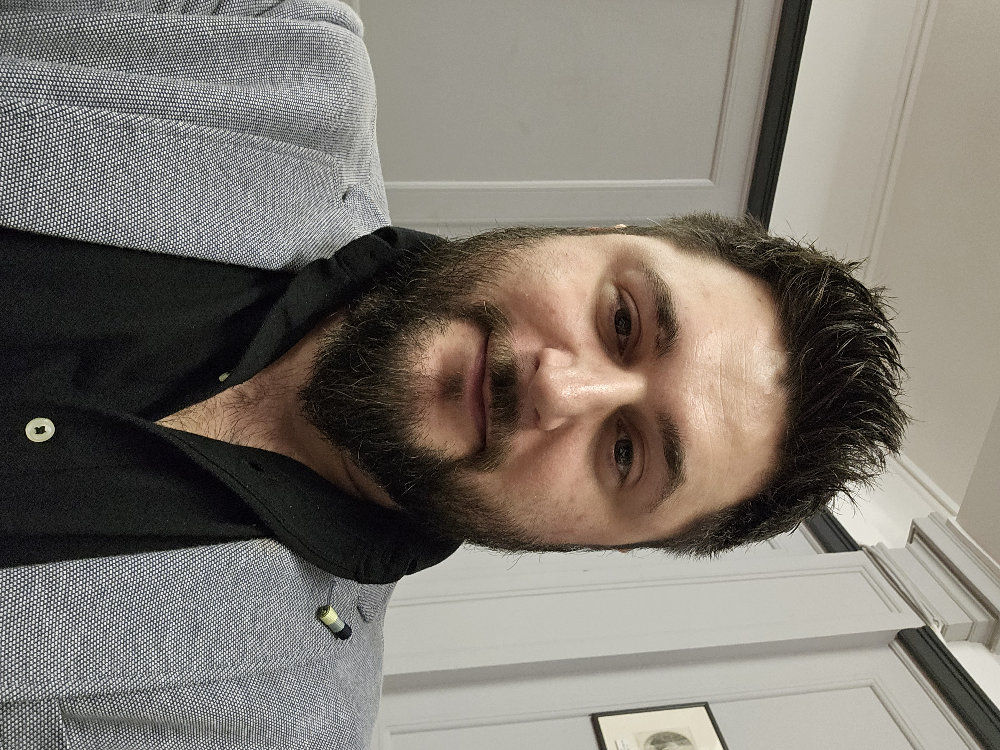

Cosmin Ciocan Resume

Summary
Hi, I am Cosmin, I am a Full Stack and Game Developer.
Education
- Software and Games Development Certificate
- Arts and Jobs Certificate
Work Experience
- Data Analyst & CI - Burtons Biscuits
December 2024 - Present
- Administrating Redzone & Redzone Admin
- Analyzing production
- Creating Tableau charts with interactions and trends
- Programmer & Technical Designer - Batfields
February 2022 - April 2024
- Prototyping & scripting gameplay mechanics
- Designing & implementing features
- Assisting with animation blueprints, shaders & materials
- Implementing IKs and Rag-dolls
Skills & Tools
- C++ for Unreal Engine 4.26+
- Rider JetBrains for coding
- Jira for tasks management & assignments
- Excel for Data Tables (Localization)
- Photoshop for UI/UX widgets
Others